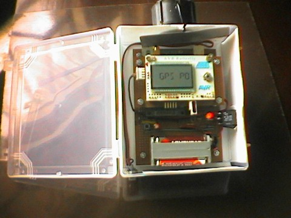
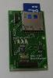

A weblog focused on interesting circuits, ideas, schematics and other information about microelectronics and microcontrollers.
E-books
Disclaimer
Because I have not tested all electronic circuits mentioned on this pages, I cannot attest to their accuracy; therefore, I do not provide a warranty of any kind and cannot be held responsible in any manner.
ARM: Assembly Language Programming
30. May 2008 - 19:42 — adminA book by Peter Knaggs and Stephen Welsh - download for free.
USB OBD2 adapter
29. May 2008 - 14:04 — adminThis project was begun as a response to build simple ISO9141-2/14230-4 ELM323 compatible USB adapter for On Board Diagnostic (OBD2) monitoring.

A Butterfly GPS
28. May 2008 - 13:57 — adminThe handy Butterfly GPS is a cost-effective system that presents location, date, and time data on its LCD. The system features an ATmega169 and a highly sensitive GPS receiver engine board based on the SiRF chipset.

Abstract
Touch the dsPIC
28. May 2008 - 13:31 — adminIf you are thinking to move on DSP, maybe dsPIC microcontrollers can be a good start as they have DSP engine built in that allows fast multiply and divide operations with arrays.
Microcontroller board with Ethernet, MMC/SD card interface and USB
27. May 2008 - 13:12 — adminThis project is a basis for developing microcontroller applications connected to an ethernet network.
MMC FAT downloader
24. May 2008 - 14:26 — adminThe MMC-FAT Bootloader project bridges the "bootstrap gap" for an arbitrary set of target hardware that follows a streaming serial bootloading protocol. It connects to an MMC disk through the ATmega168’s SPI by using the MMC bus protocol’s SPI mode. It connects to the target device through the ATmega168’s USART interface.

Small AVR-based TV terminal
22. May 2008 - 15:08 — adminTerminal with ATmega8, RS232 interface and TV out by Vasilis Serasidis.
IR and ultrasonic scanner
21. May 2008 - 11:41 — adminThis project is a short range, infrared and ultrasonic scanner that uses a standard hobby servo to move the sensors and a color LCD screen to display the information from the sensors.
Game with LCD from Nokia 3310
21. May 2008 - 11:36 — adminSimple and cheap graphic game system with LCD from Nokia cellphone.